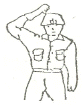
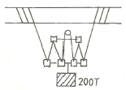

천장크레인운전기능사 (2012-07-22 기출문제)
1과목: 임의 구분
1. 크레인에 사용하는 과부하 방지장치의 안전점검 사항 중 틀린 것은?
- 과부하 방지장치가 동작할 때는 경보음이 작동되어야 한다.
- 관계책임자 이외는 임의로 조정할 수 없도록 납봉인 등이 되어 있어야 한다.
- 과부하 방지장치의 동작 시 일정한 시간이 지나면 자동 복귀되어야 한다.
- 과부하 방지장치는 성능검정을 필 한 것이어야 한다.
(정답률: 94%)

2. 주행장치의 제동방식으로 가장 적합한 것은?
- 와류 브레이크 방식
- 다이나믹 브레이크 방식
- 오일 디스크 브레이크 방식
- 직류 전자 브레이크 방식
(정답률: 57%)
3. 전자식 마그넷 브레이크(magnet brake)의 라이닝 두께가 25% 감소한 경우 가장 적합한 조치 방법은?
- 라이닝을 교환한다.
- 브레이크 드럼 지름을 크게 한다.
- 스트로크를 조정한다.
- 특별한 조치를 하지 않아도 된다.
(정답률: 80%)
4. 크레인의 과부하 방지장치용 시브 피치원 직경과 통과하는 와이어로프 지름의 비는 얼마 이상 이어야 하는가?
- 2 이상
- 3 이상
- 4 이상
- 5 이상
(정답률: 64%)
5. 크레인 제작기준, 안전기준 및 검사기준에 의하면 훅의 국부마모는 원래 규격 치수의 몇 % 이내 이어야하는가?
- 5%
- 7%
- 10%
- 20%
(정답률: 66%)
6. 천장크레인의 주행차륜은 좌우차륜의 지름차가 생기면 교환하여야 한다. 좌우차륜의 지름차가 원 치수의 몇 % 이상이면 교환하는 것이 가장 적당한가?
- 구동차륜 0.2%, 종동차륜 0.5%
- 구동차륜 0.5%, 종동차륜 1%
- 구동차륜 2%, 종동차륜 5%
- 구동차륜 1%, 종동차륜 2%
(정답률: 65%)
7. 폭풍 시 옥외에 설치된 크레인의 이탈방지장치로서 사용되는 것은?
- 전자브레이크
- 유압식완충장치
- 주행스토퍼(stopper)
- 앵커(anchor)
(정답률: 61%)
8. 브레이크 라이닝의 사용 한도는 원 두께의 약 몇 %일 때 새라이닝으로 교체하여야 하는가?
- 5%
- 15%
- 20%
- 50%
(정답률: 79%)
9. 천장크레인에서 주행레일 연결부 틈새는 얼마인가?
- 3㎜ 이상
- 3㎜ 이하
- 5㎜ 이하
- 5㎜ 이상
(정답률: 57%)
10. 천장크레인 차륜직경의 마모한도는 얼마인가?
- 원칫수의 10%
- 원칫수의 5%
- 원칫수의 3%
- 원칫수의 2%
(정답률: 37%)
11. 드럼 홈의 지름은 와이어로프의 공칭지름보다 몇 % 크게 하는 것이 좋은가?
- 10
- 20
- 30
- 40
(정답률: 39%)
12. 천장크레인의 표시 중 40/20ton×26m 용어의 해석이 맞는 것은?
- 주권 40톤, 보권 20톤, 스팬 26m
- 보권 40톤, 주권 20톤, 스팬 26m
- 주권 20톤~40톤, 스팬 26m
- 주권 0.5톤, 스팬 26m
(정답률: 85%)
13. 크레인의 권상장치에서 드럼의 권과방지 장치를 설명한 것 중 틀린 것은?
- 권과방지 장치는 스크류식, 캠식, 중추식이 주로 사용된다.
- 중추식은 훅(hook)의 접촉에 의거 작동되어 진다.
- 캠식은 도르래의 회전에 의거 작동된다.
- 스크류식은 드럼의 회전에 의거 작동된다.
(정답률: 50%)
14. 크레인 권상장치용 제한 개폐기(limit switch)에 대한 설명으로 맞는 것은?
- 전기식으로 되어 있으므로 고장이 없다.
- 드럼에 로프가 과권이 될 경우 전류를 차단하여 회전을 정지시키는 장치이다.
- 드럼의 회전수를 조정하는 장치이다.
- 필히 주전원을 연결하고 조정 작업을 하여야 한다.
(정답률: 79%)
15. 스팬이 24m인 공장작업용 천장크레인 거더의 캠버는?
- 50mm
- 30mm
- 10mm
- 5mm
(정답률: 54%)
16. 리미트 스위치에 대한 설명 중 틀린 것은?
- 보통 권상장치에 사용하나, 필요에 따라 주·횡행에도 설치 사용할 수 있다.
- 권하시 리미트 스위치가 작동하는 지점은 드럼에 와이어로프가 약 3바퀴 정도 남아있는 지점이다.
- 비상용 리미트 스위치는 상용 리미트 스위치가 고장이 났을 때 작동하는 것이다.
- 상용 리미트 스위치는 주로 중추식이 이용된다.
(정답률: 40%)
17. 천장크레인에서 정격하중의 의미를 가장 잘 설명한 것은?
- 크레인이 들어 올릴 수 있는 최대 하중
- 크레인이 평상시 주로 많이 취급하는 하중
- 달기기구의 무게를 제외한 안전 작업 하중
- 달기기구의 무게를 포함한 안전 작업 하중
(정답률: 83%)
18. 천장크레인의 주행레일 측면의 허용 마모한도는 원 치수의 얼마인가?
- 5% 이내
- 7% 이내
- 10% 이내
- 15% 이내
(정답률: 58%)
19. 훅에 걸리는 하중의 최대치로 제한치를 안전계수라 한다. 훅의 안전계수는 얼마인가?
- 2 이상
- 3 이상
- 4 이상
- 5 이상
(정답률: 89%)
20. 천장크레인에서 주행레일 또는 건물의 양 끝에 강판으로 접합하여 케이스를 만들고 충돌 부위에는 나무나 단단한 고무를 설치하여 버퍼 스토퍼와 충돌 시 충격을 완화시켜 주는 것은?
- 휠 스토퍼(wheel stopper)
- 새들 스토퍼(saddle stopper)
- 앤드 스토퍼(End stopper)
- 롤러 스토퍼(roller stopper)
(정답률: 60%)
2과목: 임의 구분
21. 다음은 천장크레인에 사용되는 권선형 모터와 농형 모터의 특성을 설명한 것이다. 바르게 설명한 것은?
- 농형 모터(motor)는 2차저항에 의하여 스피드(speed)를 조정할 수 없다.
- 농형 모터에는 슬로우 스타터(slow starter)가 필요 없다.
- 권선형 모터는 슬로우 스타터가 필요하다.
- 권선형 모터에는 2차 권선이 있다.
(정답률: 54%)
22. 도장 방법에 관한 주의사항 중 맞지 않는 것은?
- 피도장물이 충분히 건조되었을 경우 시행한다.
- 도장을 하기 전에 기름기를 충분히 제거한다.
- 녹을 충분히 제거한다.
- 부재의 끝부분 및 굴곡 부분은 1회 도장만 한다.
(정답률: 91%)
23. 교류 권선형 유도전동기의 슬립(Slip)은 보통 몇 % 인가?
- 1~3
- 3~5
- 5~8
- 8~10
(정답률: 82%)
24. 다음 중 기어의 소음 발생 원인이 아닌 것은?
- 백래시(backlash)가 너무 적을 경우
- 기어축의 평행도가 나쁠 경우
- 치면에 흠이 있거나 다듬질의 정도가 나쁠 경우
- 오일을 과다하게 급유했을 경우
(정답률: 92%)
25. 크레인을 주행레일(work way)에서 탑승하고자 한다. 가장 적절한 방법은?
- 같은 크레인 운전원이므로 승차용 사다리를 이용, 필요 시 임의 승차한다.
- 크레인의 주행방향으로 따라가다가 정지하면 곧 승차한다.
- 운전 중인 운전원을 큰소리로 불러 크레인을 정지시킨 후 탑승한다.
- 승차용 부저를 사용하여 크레인이 정지한 후 신호를 보내 주면 탑승한다.
(정답률: 90%)
26. 스프링 재료의 구비조건이 아닌 것은?
- 내식성이 클 것
- 크리프 한도가 높을 것
- 탄성한계가 높을 것
- 전연성이 풍부할 것
(정답률: 67%)
27. 천장크레인 유지 관리 시 도장에 관한 사항으로 가장 적합 하지 않는 것은?
- 도장 면적의 약 10% 정도 녹 또는 부식이 되었을 때는 재 도장을 실시하여야 한다.
- 도장 도료의 색은 예전과 구분하기 위해 색깔을 바꾸어 도색하여야 한다.
- 녹이 있는 부분은 녹을 없앤 후 도장을 하여야 한다.
- 맑고 건조한 날씨를 택하여 하는 것이 좋다.
(정답률: 87%)
28. 양축이 동일평면 내에 있고, 그 축선이 30˚ 이하의 각도로 교차하는 경우에 사용되는 축 이음으로서 훅 조인트라고도 하며, 양축단에 각각 요크(yoke)를 부착하고, 이것을 십자형의 핀으로 자유로이 회전할 수 있도록 연결한 축 이음은?
- 플렉시블 커플링
- 자재이음
- 오울덤 커플링
- 고정축이음
(정답률: 53%)
29. 제어기(controller)의 핸들이 무거운 경우의 고장원인과 대책 중 틀린 것은?
- 베어링에 기름이 없으면, 베어링에 급유한다.
- 이물이 혼입되어 있으면, 점검하여 청소한다.
- 리턴 스프링이 열화되어 있으면 스프링을 교환한다.
- 내부 기구가 부적당하면, 점검하여 조정한다.
(정답률: 55%)
30. 천장크레인에 사용되는 구름 베어링의 설명 중 틀린 것은?
- 구름베어링은 2000RPM이상 고속회전에 많이 쓰인다.
- 베어링은 불과 롤러의 배열에 따라 구분하면 단열과 복열이 있다.
- 안지름이 20㎜ 이상 500㎜ 미만은 5로 나눈 수가 안지름 번호이다.
- 구름베어링의 안전율은 회전수, 수명계수를 고려하여 2,5-3으로 한다.
(정답률: 54%)
31. 배전반 내에 설치된 직접적인 안전장치가 아닌 것은?
- 과전류 계전기 및 휴즈
- 제어회로용 나이프 스위치 및 휴즈
- 단락 보호장치
- 누름단추
(정답률: 67%)
32. 천장크레인에서 운전작업의 유의사항으로 틀린 것은?
- 권상 시 매다는 용구가 팽팽해지면 일단 정지 후 신호에 따라 올리며 짐이 지면으로 떨어졌을 때 다시 정지하여 확인한다.
- 운전 중 정전이 되었을 때 휴즈 교환을 하고, 제어가 전원을 작동하여 송전을 기다린다.
- 신호가 불확실하다고 생각되면 운전작업을 하지 않도록 한다.
- 줄걸이 상태가 불안하다고 판단되면 운전작업을 하지 않도록 한다.
(정답률: 74%)
33. 천장크레인에 대한 설명으로 틀린 것은?
- 천장크레인의 보수에 있어서 권상장치는 예방보전으로 관리한다.
- 주행장치의 주행차륜은 년간점검으로 관리한다.
- 점검은 일상점검, 주간점검, 월간점검, 년간점검으로 구분한다.
- 천장크레인은 예방보전 하는 것이 좋다.
(정답률: 67%)
34. 저항기가 부적당하게 선정되었을 경우 다음 중 어느 것이 전동기에 영향을 미치는가?
- 발열이 생긴다.
- 과부하 계전기가 끊긴다.
- 진동이 생긴다.
- 단선이 된다.
(정답률: 63%)
35. 천장크레인에서 가장 많이 사용하는 전압(V)은?
- 110
- 120
- 220
- 440
(정답률: 85%)
36. 마그넷 크레인(magnet crane)에 있어서 최소 정전보증시간은?
- 10분 이상
- 20분 이상
- 40분 이상
- 50분 이상
(정답률: 52%)
37. 전달할 수 있는 토크의 크기가 큰 것부터 순서대로 된 것은?
- 성크키이 - 스플라인 - 새들키이 - 평키이
- 평키이 - 새들키이 - 성크키이 - 스플라인
- 새들키이 - 성크키이 - 스플라인 - 평키이
- 스플라인 - 성크키이 - 평키이 - 새들키이
(정답률: 63%)
38. 천장크레인의 전동기 보호를 위하여 주로 사용하고 있는 계전기는?
- 과부하 계전기
- 한시 계전기
- 전력 계전기
- 주파수 계전기
(정답률: 90%)
39. M20 볼트의 설명으로 맞는 것은?
- 메트릭 나사이며 유효경이 20㎜이다.
- 나사산 각도가 60˚이며 볼트 외경이 20㎜이다.
- 나사산 각도가 60˚이며 볼트 유효경이 20㎜이다.
- 메트릭 나사이며 나사산의 각도가 55˚이다.
(정답률: 55%)
40. 4심 코드의 색 중 접지선의 색으로 옳은 것은?
- 녹색
- 흑색
- 적색
- 백색
(정답률: 70%)
3과목: 임의 구분
41. 권상용 와이어로프는 달기구가 가장 아래쪽에 위치할 때 드럼에 몇 회 이상 감기는 여유가 있어야 하는가?
- 1회
- 2회
- 3회
- 4회
(정답률: 77%)
42. 줄걸이 작업에 사용하는 샤클(shackle)의 사용 전 확인사항과 가장 거리가 먼 것은?
- 허용 인양 하중을 확인하여야 한다.
- 샤클의 재질을 확인하여야 한다.
- 나사부 및 핀(pin)의 상태를 확인하여야 한다.
- 안전 작업 하중(SWL)을 확인하여야 한다.
(정답률: 85%)
43. 줄걸이 작업자의 안전작업방법을 설명한 것으로 거리가 먼 것은?
- 화물의 하중을 어림짐작하여 작업한다.
- 정격하중을 넘는 무게의 화물을 매달지 않는다.
- 상례적으로 정해진 화물은 전문적인 줄걸이 용구를 만들어 작업한다.
- 화물의 하중 판단에 자신이 없을 때는 숙련자에게 문의하여 작업한다.
(정답률: 94%)
44. 가로 10m, 세로 1m, 높이 0.2m인 금속화물이 있다. 이것을 4줄 걸이, 30도로 들어 올릴 때 한 개의 와이어에 걸리는 하중은 약 얼마인가? (단, 금속의 비중은 7.8 이다.)
- 3.9톤
- 7.8톤
- 4.0톤
- 15.6톤
(정답률: 26%)
45. 그림과 같이 주먹을 머리에 대고 떼었다 붙였다 하며 호각을 짧게, 길게 부는 신호 방법은?

- 보권사용
- 주권사용
- 위로 올리기
- 작업 완료
(정답률: 76%)
46. 크레인에서 그림과 같이 200톤(T)짜리 화물을 들어 올리려 할 때 당기는 힘은? (단, 마찰저항이나 매다는 기구 자체의 무게는 없는 것으로 가정한다.)

- 25톤
- 28.6톤
- 40톤
- 100톤
(정답률: 53%)
47. 와이어로프의 관리방법에 대한 설명 중 틀린 것은?
- 와이어로프의 외부는 항상 기름을 칠하여 둔다.
- 지면에 직접 닿지 않게 보관한다.
- 비에 젖었을 때는 수분을 마른 걸레로 닦은 후 기름을 칠하여 둔다.
- 와이어로프의 보관 장소는 직접 햇빛이 닿는 곳이 좋다.
(정답률: 77%)
48. 크레인 작업 시 정격하중 이상의 과부하가 걸려 위험한 상태일 때 와이어로프에 일어나는 현상으로 가장 적절한 것은?
- 부식된다.
- 기름이 베어 나온다.
- 옆으로 꼬인다.
- 킹크가 발생된다.
(정답률: 41%)
49. 타워크레인의 줄걸이 작업이 종료되었을 때의 올바른 방법이 아닌 것은?
- 운전자에게 반드시 종료신호를 한다.
- 줄걸이 용구는 다음에 즉시 사용할 수 있도록 훅에 걸어둔다.
- 훅은 2m 이상의 높이로 권상하여 둔다.
- 보호구, 보조구는 각각 정해진 장소에 보관한다.
(정답률: 84%)
50. [6×37]의 규격을 가진 와이어로프는 한 꼬임에서 최대 몇 가닥의 소선이 절단될 때까지 사용이 가능한가?
- 12가닥
- 22가닥
- 32가닥
- 42가닥
(정답률: 78%)
51. 운반작업 시의 안전수칙 중 틀린 것은?
- 무리한 자세로 장시간 운반하지 않는다.
- 화물은 될 수 있는 대로 중심을 높게 한다.
- 정격하중을 초과하여 권상하지 않도록 한다.
- 무거운 물건을 이동할 때 호이스트 등을 활용한다.
(정답률: 85%)
52. 다음 중 안전표지 분류에 해당되지 않는 것은?
- 금지 표지
- 녹십자 표지
- 경고 표지
- 안내 표지
(정답률: 72%)
53. 안전 관리의 목적이 아닌 것은?
- 인명의 존중
- 생산성의 향상
- 경제성의 향상
- 안전사고의 수습
(정답률: 54%)
54. 재해 발생 과정에서 하인리히 연쇄반응이론의 발생 순서를 옳게 나열한 것은?
- 사회적 환경과 선천적 결함→개인적 결함→불안전 행동→사고→재해
- 개인적 결함→사회적 환경과 선천적 결함→사고→불안전 행동→재해
- 불안전 행동→사회적 환경과 선천적 결함→개인적 결함→사고→재해
- 사회적 환경과 선천적 결함→개인적 결함→재해→불안전 행동→사고
(정답률: 55%)
55. 화재의 분류에서 전기 화재에 해당되는 것은?
- A급 화재
- B급 화재
- C급 화재
- D급 화재
(정답률: 71%)
56. 재해의 간접 원인이 아닌 것은?
- 기술적 원인
- 교육적 원인
- 신체적 원인
- 자본적 원인
(정답률: 63%)
57. 추락물의 위험이 있는 작업장에서 갖추어야 할 가장 적절한 보호구는?
- 안전모
- 귀마개
- 보안경
- 안전장갑
(정답률: 92%)
58. 보안경의 유지 관리 방법으로 틀린 것은?
- 렌즈는 매일 깨끗이 닦아야 한다.
- 흠집이 생긴 보호구는 교환해 주어야 한다.
- 성능이 떨어진 헤드밴드는 교환해 주어야 한다.
- 교환렌즈는 안전상 뒷면으로 빠지도록 해야 한다.
(정답률: 89%)
59. 수공구 취급 시 지켜야 될 안전수칙으로 옳은 것은?
- 해머작업 시 손에 장갑을 끼고 한다.
- 줄질 후 쇳가루는 입으로 불어 낸다.
- 사용 전에 충분한 사용법을 숙지하고 익히도록 한다.
- 큰 회전력이 필요한 경우 스패너에 파이프를 끼워서 사용한다.
(정답률: 82%)
60. 작업장에서의 옷차림에 대한 설명으로 틀린 것은?
- 작업복은 단정하게 착용한다.
- 작업복은 몸에 맞는 것을 입는다.
- 수건은 허리춤에 끼거나 목에 감는다.
- 기름이 묻은 작업복은 될 수 있는 한 입지 않는다.
(정답률: 84%)